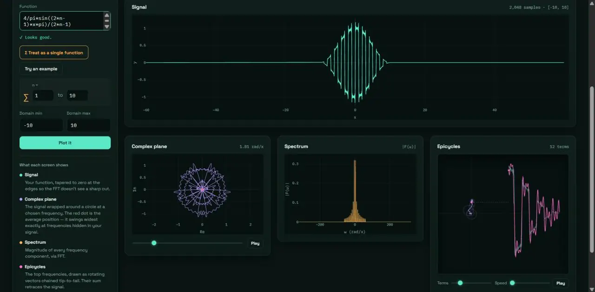
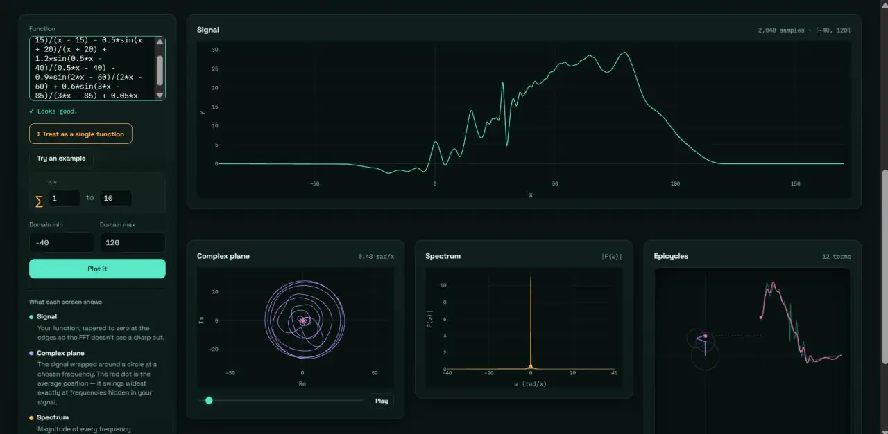

IndexSheet 08 · Computation · 2025
Fourier Lab: seeing a transform work
An independent web app, built the summer before university, that shows how Fourier analysis takes a signal apart. Type a function or pick an example, then watch the series, complex-plane and epicycle views build it back up.
- Stack
- Python · JavaScript · HTML · CSS
- Working
- Fourier series, complex-plane and epicycle views; user-typed functions (spell-checked) and summations for square, saw and noise signals
- Status
- Fourier module working, not yet published · Laplace module in development

The same math, other uses
The app also simulates Whittaker–Shannon interpolation, the band-limited reconstruction of a continuous signal from discrete samples. In signal processing and quantitative finance the same equation rebuilds smooth price paths from daily data and models how market shocks ripple and fade.

Laplace transforms in 3D
I’m adding MATLAB-derived elements to simulate the Laplace transform in three dimensions, and I’ll publish the site once the interface is polished. None of the Laplace features are shown as finished here.